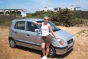
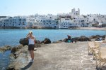
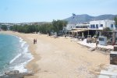
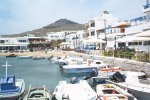
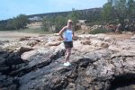
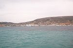
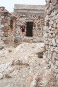
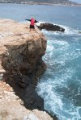
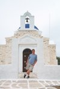
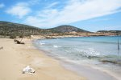

|
|
|
lornaland.co.uk Holidays Photo Gallery Lornaland Natter USA 2005 Journal Menu...21st May - 23rd May24th May - 26th May 27th May - 29th May 30th May - 1st June 2nd June - 4th June Paros Pictures |
Paros24th May - 26th May 2004Monday 24th May 2004 Today we got our hire car. The rep arrived slightly earlier than planned so she had to wake us up. After speculation about what kind of car we would get, it turns out we have a nice little Silver Hyundai Atos Prime (whatever one of those is!)  We set off North to Noussa, the only other "resort" on Paros. It's a nice little fishing town with a pretty harbour area full of tavernas. We buy ourselves a map and plan our day while we sit in a cafe for a cool drink. From Noussa, we plan to drive round the whole island checking out the beaches and villages. First stop is Santa Maria which is a very nice beach though a little windy, ideal for windsurfing! The beach is almost deserted except for 2 people sunbathing and a few others mooching about like us. Our next stop is Ambela which doesn't have much either, except the topless people turns out to be a granny! There were some tavernas there too! Back in the car, we carry on south.  Our next stop is Piso Livadhi which turns out to be another nice little town with a pretty fishing harbour, not much of a beach though. Further round the island, we find a very nice secluded beach at Faragas. In need of a toilet stop and some food, we stop off at Aliki (I'm not even gonna tell you what that is!) ;o) Our waiter turns out to be from Cornwall and insists on giving us some tips for our stay though I have to admit, some of what he said was good, but not much!. Our last stop for today is Pounda where you can catch the car ferry over to Antiparos and that it seems is all you can do there so we head back home to put Herman (the Hyundai) to bed. It's 5.00pm and still very hot and sunny so we settle down by the pool for a couple of hours before dinner. Dinner: Tzatziki & bread to start followed by lamb kleftiko for both of us. Dessert is chocolate mousse (Dan) and yogurt & fruit (Me) Tuesday 25th May 2004 BooHoo! It's very windy and cloudy today. No sun! We head off into town to stock up on food supplies and feast on a breakfast of salami and cheese omelette with bread followed by Greek yogurt and honey. Yummy! With the day almost gone, we jump in the car for more exploring. We head off north again towards Noussa stopping along the way.  We firstly arrive at Cape Aghios Fokas which is the tip of the bay around Parikia and home to a little church and some ruins. Back on the road we stumble across a sign for "Dhillia Apollo Sanctuary", aka a big pile of rocks up a steep dirt road. This however, is nothing compared to the next road we end up on which is supposed to be a principal road to Noussa (lies me thinks) It's the worst road ever. When the dirt track eventually becomes a pile of rubble in a straightish line I finally persuade Dan to let us turn back in search of a better road. We travel to Monastri beach which so far seems to be the only beach we've seen on the island which seems to get busy judging by the plentiful supply of sun beds and umbrellas for hire, although as it's a grotty day there isn't a single sole in sight. We head to Noussa then Piso Livadhi but both places also seem very deserted. Where did all the tourists go? We head back home to think about dinner. Dinner: Calamari AND chips for starter followed by carbonara for Dan while I opt for sausages flambe followed by Chicken Souvlaki Wednesday 26th May 2004 It's windy again today but the sun is shining and the clouds have almost gone. We take a risk and pack our stuff and head to the beach.
We head for the secluded beach at Faragas on the South of the island due to the wind coming form the North. We arrive to find it just
as deserted as the last time.
Tonight we decide to head back to a restaurant we've already been to. He seems happy to see us again (but obviously not that happy!) We order a "cheese feast" which will now and forever be known as "The cheesiest pizza in the world" as well as one with a bit of meat on but we're beaten, although it's not known if this is due to being full or the pizza being too cheesy! We can still manage to share an ice-cream before we're given the whopping bill of 40 Eros and not a free ouzo in sight! (We won't be going back there again, the man is evil!) |
 There's us plus 4 or 5 other couples on the entire beach. We manage 2 hours of relaxing when the beach
becomes invaded by a large German family complete with screaming kids! Despite the fact that the beach is deserted does not affect
them and they seem set up camp right behind us. We decide we're probably done for the day anyway so we head back towards home via
Lefkes for a wee drinky.
There's us plus 4 or 5 other couples on the entire beach. We manage 2 hours of relaxing when the beach
becomes invaded by a large German family complete with screaming kids! Despite the fact that the beach is deserted does not affect
them and they seem set up camp right behind us. We decide we're probably done for the day anyway so we head back towards home via
Lefkes for a wee drinky.